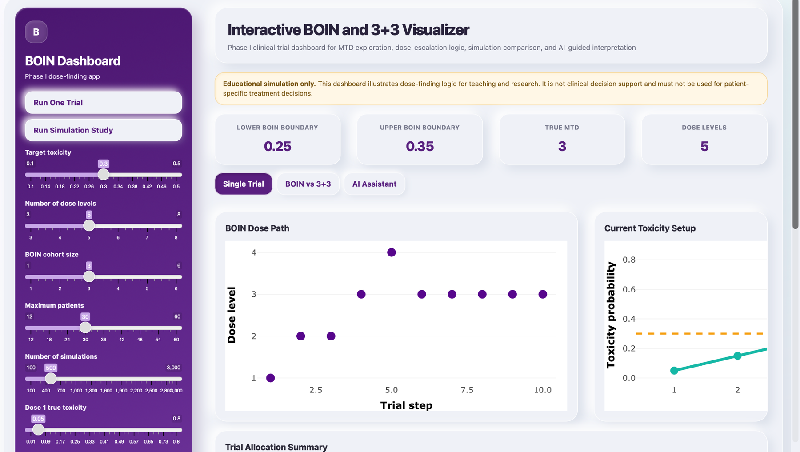

Configure toxicity scenarios
Adjust dose-level toxicity, target toxicity, cohort size, and maximum enrollment to explore realistic Phase I settings.
PHASE I CLINICAL-TRIAL METHODS
An educational Shiny dashboard for exploring a BOIN-style interval approach alongside the traditional 3+3 design—through simulation, dose paths, allocation patterns, and MTD selection.
Educational simulation only. Not clinical decision support and not for patient-specific treatment decisions.
WHAT THE PROJECT SHOWS
Static tables can hide the practical consequences of dose escalation. This project turns the decision process into a readable, adjustable teaching tool.
Adjust dose-level toxicity, target toxicity, cohort size, and maximum enrollment to explore realistic Phase I settings.
See how observed DLTs shape escalation, staying, de-escalation, and dose elimination over a simulated trial.
Contrast BOIN-style and 3+3 allocation, MTD selection, overdose exposure, and total patient enrollment across repeated simulations.
METHODS NOTE
The dashboard is built for learning and demonstration. It makes the underlying logic tangible without claiming protocol-ready clinical decision support.
A simplified educational interval approach compares the observed DLT rate with lower and upper toxicity boundaries to guide escalation, staying, or de-escalation.
A familiar cohort-based design that uses observed DLT counts among groups of three participants to determine whether to escalate, expand, or stop.
INTERFACE PREVIEW

GitHub Pages documents the project and its source. A Shiny-capable host is required to run the live simulation server.
PORTFOLIO CONTEXT
Rather than presenting a single “best” dose or rule, the dashboard foregrounds assumptions, observed toxicity, and trade-offs—important habits for clinical research analytics and biostatistical communication.
Read the full project documentation